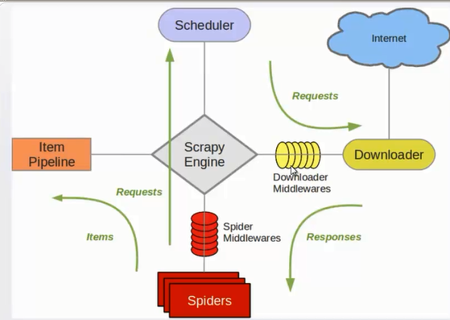
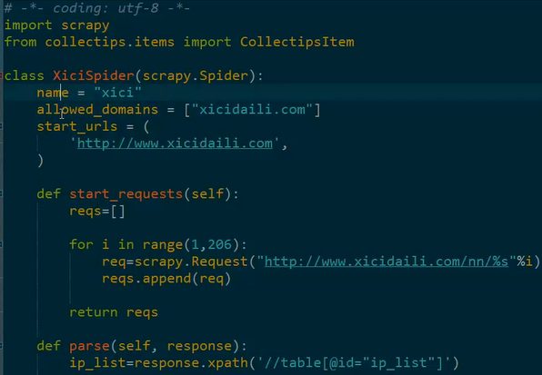
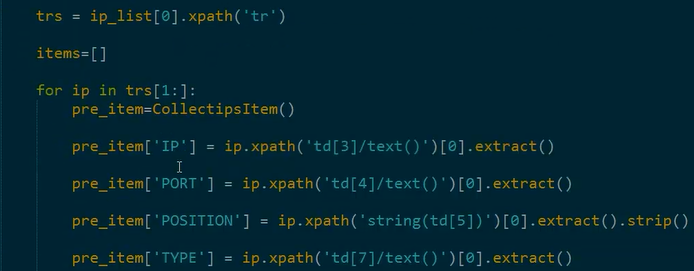
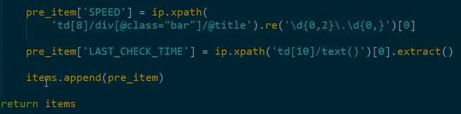

1、Scrapy Engine：
负责组件之间数据的流转，当某个动作发生时触发事件；
2、Scheduler：
接收requests，并把他们入队，以便后续的调度；
3、Downloader：
负责抓取网页，并传送给引擎，之后抓取结果将传给spider；
4、Spiders：
用户编写的可定制化的部分，负责解析response，产生items和URL；
5、Item Pipeline：
负责处理item，典型的用途：清洗、验证、持久化；
6、Downloader middlewares：
位于引擎和下载器之间的一个钩子，处理传送到下载器的requests和传送到引擎的response；
7、Spider middlewares：
位于引擎和抓取器之间的一个钩子，处理抓取器的输入和输出。

Scrapy中的数据流由执行引擎控制，其过程如下:
1、引擎打开一个网站(open a domain)，找到处理该网站的Spider并向该spider请求第一个要爬取的URL(s)。
2、引擎从Spider中获取到第一个要爬取的URL并在调度器(Scheduler)以Request调度。
3、引擎向调度器请求下一个要爬取的URL。
4、调度器返回下一个要爬取的URL给引擎，引擎将URL通过下载中间件(请求(request)方向)转发给下载器(Downloader)。
5、一旦页面下载完毕，下载器生成一个该页面的Response，并将其通过下载中间件(返回(response)方向)发送给引擎。
6、引擎从下载器中接收到Response并通过Spider中间件(输入方向)发送给Spider处理。
7、Spider处理Response并返回爬取到的Item及(跟进的)新的Request给引擎。
8、引擎将(Spider返回的)爬取到的Item给Item Pipeline，将(Spider返回的)Request给调度器。
9、(从第二步)重复直到调度器中没有更多地request，引擎关闭该网站。
1、down loader middle ware
Each middleware component is a Python class that defines one or more of the following methods:
class scrapy.downloadermiddlewares.DownloaderMiddleware
process_request(request, spider)
This method is called for each request that goes through the download middleware.
process_request() should either: return None, return a Response object, return a Request object, or raise IgnoreRequest.
If it returns None, Scrapy will continue processing this request, executing all other middlewares until, finally, the appropriate downloader handler is called the request performed (and its response downloaded).
If it returns a Response object, Scrapy won’t bother calling any other process_request() or process_exception() methods, or the appropriate download function; it’ll return that response. The process_response() methods of installed middleware is always called on every response.
If it returns a Request object, Scrapy will stop calling process_request methods and reschedule the returned request. Once the newly returned request is performed, the appropriate middleware chain will be called on the downloaded response.
If it raises an IgnoreRequest exception, the process_exception() methods of installed down-loader middleware will be called. If none of them handle the exception, the errback function of the request (Request.errback) is called. If no code handles the raised exception, it is ignored and not logged (unlike other exceptions).
Parameters
• request (Request object) – the request being processed
• spider (Spider object) – the spider for which this request is intended
process_response(request, response, spider)
process_response() should either: return a Response object, return a Request object or raise a
IgnoreRequest exception.
If it returns a Response (it could be the same given response, or a brand-new one), that response will continue to be processed with the process_response() of the next middleware in the chain.
If it returns a Request object, the middleware chain is halted and the returned request is resched-uled to be downloaded in the future. This is the same behavior as if a request is returned from process_request().
If it raises an IgnoreRequest exception, the errback function of the request (Request.errback) is called. If no code handles the raised exception, it is ignored and not logged (unlike other exceptions).
Parameters
• request (is a Request object) – the request that originated the response
• response (Response object) – the response being processed
• spider (Spider object) – the spider for which this response is intended
process_exception(request, exception, spider)
Scrapy calls process_exception() when a download handler or a process_request() (from a downloader middleware) raises an exception (including an IgnoreRequest exception)
process_exception() should return: either None, a Response object, or a Request object.
If it returns None, Scrapy will continue processing this exception, executing any other process_exception() methods of installed middleware, until no middleware is left and the default exception handling kicks in.
If it returns a Response object, the process_response() method chain of installed middleware is started, and Scrapy won’t bother calling any other process_exception() methods of middleware.
If it returns a Request object, the returned request is rescheduled to be downloaded in the future. This stops the execution of process_exception() methods of the middleware the same as returning a response would.
Parameters
request (is a Request object) – the request that generated the exception
exception (an Exception object) – the raised exception
spider (Spider object) – the spider for which this request is intended
2、spider middle wares
Each middleware component is a Python class that defines one or more of the following methods:
class scrapy.spidermiddlewares.SpiderMiddleware
process_spider_input(response, spider)
This method is called for each response that goes through the spider middleware and into the spider, for processing.
process_spider_input() should return None or raise an exception.
If it returns None, Scrapy will continue processing this response, executing all other middlewares until, finally, the response is handed to the spider for processing.
If it raises an exception, Scrapy won’t bother calling any other spider middleware process_spider_input() and will call the request errback. The output of the errback is chained back in the other direction for process_spider_output() to process it, or process_spider_exception() if it raised an exception.
Parameters
• response (Response object) – the response being processed
• spider (Spider object) – the spider for which this response is intended
process_spider_output(response, result, spider)
This method is called with the results returned from the Spider, after it has processed the response.
process_spider_output() must return an iterable of Request, dict or Item objects.
Parameters
• response (Response object) – the response which generated this output from the spi-der
• result (an iterable of Request, dict or Item objects) – the result returned by the spider
• spider (Spider object) – the spider whose result is being processed
process_spider_exception(response, exception, spider)
This method is called when when a spider or process_spider_input() method (from other spider middleware) raises an exception.
process_spider_exception() should return either None or an iterable of Response, dict or Item objects.
If it returns None, Scrapy will continue processing this exception, executing any other process_spider_exception() in the following middleware components, until no middleware components are left and the exception reaches the engine (where it’s logged and discarded).
If it returns an iterable the process_spider_output() pipeline kicks in, and no other process_spider_exception() will be called.
Parameters
• response (Response object) – the response being processed when the exception was raised
• exception (Exception object) – the exception raised
• spider (Spider object) – the spider which raised the exception
process_start_requests(start_requests, spider)
New in version 0.15.
This method is called with the start requests of the spider, and works similarly to the process_spider_output() method, except that it doesn’t have a response associated and must return only requests (not items).
It receives an iterable (in the start_requests parameter) and must return another iterable of Request objects.



【本文由麦子学院独家原创，转载请注明出处并保留原文链接】